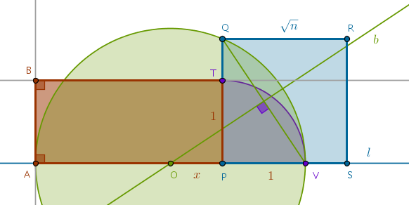
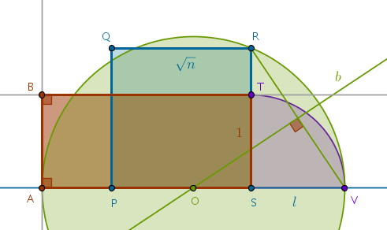
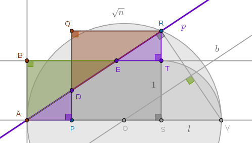
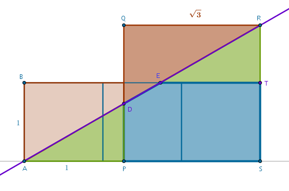
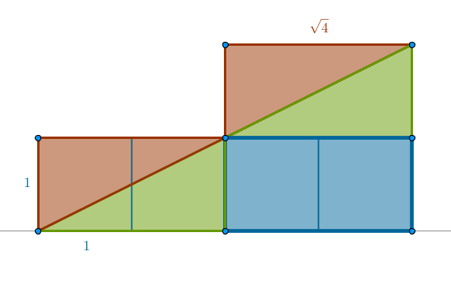
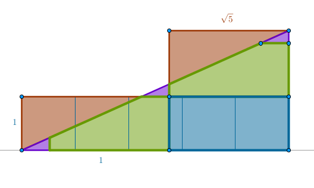
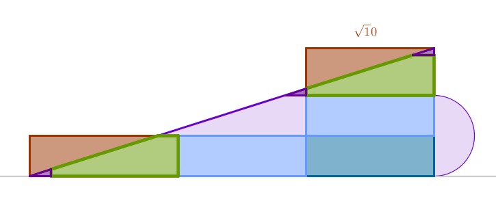

This problem was given by Prof. Fowler of Ohio State University as part of Calculus 1 course available on coursera.org
Problem
given a square with a side length of \(\sqrt{n}, n = 2, 3, 4, \dots \) find a method of cutting the square into some number of pieces which, when assembled, form the corresponding \(1 \times n\) rectangle
Process
A rectangle and a corresponding square instantly bring Euclid's B2P14, to construct a square equal to a given rectilinear figure, to mind. In that proposition Euclid transforms an arbitrary rectilinear figure into a rectangle with the same square area and then he transforms the latter rectangle into a corresponding square.
In our case, since we are given a square, it pays to construct the corresponding rectangle assuming that a basic unit of measurement equal to unity in length is given. Taking Euclid's construction quite literally we obtain:
Since:
$$PT = 1$$is given, \(Circle( P, PT)\) will intersect the line segment \(PS\) at \(V\) which, according to B2P14, together with \(Q\) must belong to the circumference of a circle that delineates the long side of the rectangle sought-after.
To locate the center of that circle, \(O\), we observe that the points \(Q\) and \(V\) are equidistant from \(O\) by definition. The locus of all the points equidistant from two given points is the perpendicular bisector of the corresponding line segment. Consequently, the bisector \(b\) of the line segment \(QV\) will intersect the straight line \(l\) passing through \(P\) and \(S\) at \(O\).
Constructing \(Circle(O, OV = OQ)\) locates the point \(A\) on \(l\). A perpendicular to \(l\) through \(A\) locates \(B\) via a perpendicular to the side \(PQ\) through \(T\). The rectangle \(ABTP\) is the one sought-after.
By construction \(\triangle OPQ\) is right:
$$OQ^2 = n + x^2$$and:
$$OQ = OV = x + 1$$Solving the above two equations for \(x\) and \(OV\) we obtain:
$$x = \frac {n - 1}{2}$$ $$OV = \frac {n + 1}{2}$$from where it follows that the long side \(AP\) of the rectangle \(ABTP\) is:
$$AP = AO + x =$$ $$OV + x = n$$from where it follows that the square area of the rectangle \(ABTP\) is equal to the square area of the given square \(PQRS\).
However, to solve this problem it pays to construct the \(1 \times n\) rectangle in such a way that it is contained within the given square as much as possible. In terms of the above drawing it means shifting or sliding the rectangle \(ABTP\) along \(l\) until its side \(TP\) coincides with the side of the given square \(RS\):
We now observe that the tree points \(A, V, R\), by construction, belong to a circumference of \(Circle(O, OR = OV)\), that we already have two line segments, \(AV\) and \(VR\), constructed and that the line segment \(AR\) is begging to be drawn to complete the \(\triangle ARV\) which, according to B3P31 or Thales' Theorem, must be right:
We observe that the straight line \(p\), passing through \(A\) and \(R\), is perpendicular to the line segment \(RV\) and that the bisector \(b\) is also perpendicular to the line segment \(RV\). Since now we have a straight line passing through \(R\) and \(V\) falling on two straight lines, \(p\) and \(b\), in such a way that the corresponding alternate angles are equal because they are right, from B1P27 it follows that \(p\) and \(b\) are, in fact, parallel.
However, we direct our attention to two pairs of triangles: \(\triangle APD\) and \(\triangle ETR\) being the first pair and \(\triangle ABE\) and \(\triangle DQR\) being the second pair.
Our suspicion is that pairwise these triangles are congruent. Namely, \(\triangle APD\) and \(\triangle ETR\) are congruent and so are \(\triangle ABE\) and \(\triangle DQR\).
By construction the triangles \(APD\) and \(ASR\) are right and they both share a common vertex at \(A\). From B1P32 it follows that for the remaining angles of these triangles we have:
$$\angle ADP = \angle ARS$$and by AAA \(\triangle APD\) and \(\triangle ASR\) are similar. From B6P4 it follows that the sides about the equal angles in these triangles are in the same proportion:
$$\frac {PD}{PA} = \frac {SR}{SA}$$ $$PD = PA \times \frac {SR}{SA} = $$ $$(n - \sqrt{n}) \times \frac {\sqrt{n}}{n} =$$ $$\sqrt{n} - 1 = TR$$from where it follows that:
$$QD = \sqrt{n} - PD =$$ $$\sqrt{n} - \sqrt{n} + 1 =$$ $$1 = AB$$By similar argument we prove that the right, by construction, triangles \(ETR\) and \(ASR\) are similar since they share a common vertex at \(R\) and hence:
$$\frac {TE}{TR} = \frac {SA}{SR}$$ $$TE = TR \times \frac {SA}{SR} = $$ $$(\sqrt{n} - 1) \times \frac {n}{\sqrt{n}} =$$ $$n - \sqrt{n} = PA$$from where it follows that:
$$BE = n - TE =$$ $$n - n + \sqrt{n} =$$ $$\sqrt{n} = QR$$We now have proven that for two similar right triangles \(APD\) and \(ETR\) we have:
$$PD = TR$$ $$PA = TE$$which means that by SAS principle these triangles are congruent. Further, for two right triangles \(ABE\) and \(DQR\) we have:
$$QD = BA$$ $$QR = BE$$which means that by SAS principle these triangles are congruent also.
Mechanically the above two facts mean that if \(\triangle DQR\) is moved down along \(p\) until its vertexes coincide with the corresponding vertexes of \(\triangle ABE\) and if \(\triangle ETR\) is moved down \(p\) until its vertexes coincide with the corresponding vertexes of \(\triangle APD\) then our problem is solved:
by cutting the given square in three pieces, \(\triangle DQR\), \(\triangle ETR\) and a \(5-\)gon \(PDETS\), the corresponding \(1 \times n\) rectangle can be tiled over with these pieces precisely - with no gaps and no overlaps
The above construction yields the following generic solution for any
\(n > 1\):
- construct the corresponding \(1 \times n\) rectangle in such a way that it shares a common right angle at any of four vertexes of the given square
- connect the outer, not shared, vertex of the given square, \(R\), diagonally with the outer, not shared, vertex of the \(1 \times n\) rectangle, \(A\), via a straight line, \(p\)
- cut the given square into as many \(1 \times \sqrt{n}\) rectangles starting from the side shared with the \(1 \times n\) rectangle as possible - these \(1 \times \sqrt{n}\) rectangles will fill the the \(1 \times n\) rectangle as much as possible
- the last portion of the given square that is not a \(1 \times \sqrt{n}\) rectangle will be cut by \(p\) into three pieces that will cover the remaining portion of the \(1 \times n\) rectangle
For example, for \(\sqrt{2}\) we have:
For \(\sqrt{3}\) we have:
For \(\sqrt{4}\) we have:
For \(\sqrt{5}\) we have:
and so on.
We observe that as \(n\) grows the size of \(\triangle DQR\) diminishes while the size of \(\triangle ETR\) increases. For:
$$n = 4$$these triangles become congruent and starting with:
$$n = 5$$this process repeats until \(n\) reaches the next perfect square, \(9\), and so on.
For \(\sqrt{10}\), for example, we have:
We see that at an intuitive level the above procedure demonstrates that only square roots of perfect squares of natural numbers can be rational.
\(\blacksquare\)